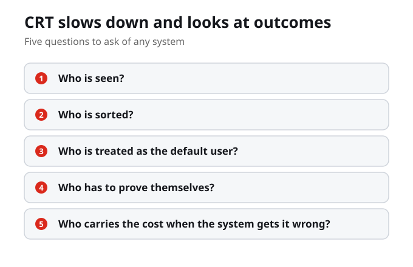
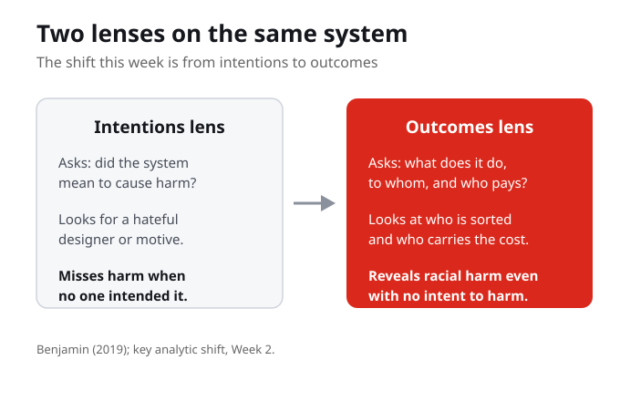

From Structural Racism to the New Jim Code
Critical race theory begins from a hard point: racism is not only about individual attitudes. It can be built into laws, institutions, and systems that present themselves as neutral. The New Jim Code carries that same structural racism into the digital world, where technology reproduces older racial inequality while looking new, objective, or progressive. The shift this week is to stop asking whether a system intends harm and start asking what it does, to whom, and who pays.
Critical race theory holds that racism can be built into laws, institutions, and systems that look neutral, and the New Jim Code carries that same structural racism into technology that looks new and objective.
When you stop asking whether a system intends harm and start asking what it does, to whom, and who pays, what becomes visible that was hidden before?
Racism Is Ordinary, Not Only an Outburst
Critical race theory starts from a hard but important point: racism is not only about individual attitudes. It can be built into laws, institutions, everyday routines, and systems that present themselves as normal or neutral. Crenshaw, one of CRT's founding scholars, shows that the deepest harms often sit in the ordinary machinery of how systems sort people, not only in moments of open hostility.
Racism is not only about individual attitudes. It can be built into laws, institutions, everyday routines, and systems that present themselves as normal or neutral.
The Language of Objectivity
That matters for technology because technology often arrives with the language of objectivity. We hear that an algorithm is just math, a form is just a form, a search result is just a ranking, or a system is just following rules. CRT teaches us to treat that calm, neutral language as the very thing to question, because it is where a viewpoint can hide while claiming to have none.
Technology often arrives wrapped in the language of objectivity: an algorithm is just math, a form is just a form, a search result is just a ranking, a system is just following rules.
Where in your digital life have you accepted that something is just math or just a ranking without asking who it was built for?

Look at Outcomes, Not Just Intentions
CRT asks us to slow down and look at outcomes. Who is seen? Who is sorted? Who is treated as the default user? Who has to prove themselves? Who carries the cost when the system gets it wrong? These five questions move the analysis off the designer's intentions and onto what the system actually does to real people.
CRT asks us to slow down and look at outcomes: who is seen, who is sorted, who is treated as the default user, who has to prove themselves, and who carries the cost when the system gets it wrong.

The New Jim Code Is CRT Applied to Code
Benjamin's New Jim Code takes that kind of question into the digital world. The point is not that every machine has a hateful intention. The point is that technology can reproduce older forms of racial inequality while looking new, neutral, efficient, or progressive. Benjamin defines the New Jim Code as new technologies that reflect and reproduce existing inequities while being experienced as more objective or progressive than the systems of an earlier era. Read it as critical race theory applied to code.
The New Jim Code is not about machines with hateful intentions. It is about technology that reproduces older racial inequality while looking new, neutral, efficient, or progressive.
If a system can produce racial harm with no intent to harm, why is the appearance of neutrality the most dangerous part?
Intersectionality Sharpens the Question
Crenshaw's intersectionality, which you met in Week 1, sharpens the CRT lens. Her core move is that harm is best understood at the intersection of systems, and an analysis that looks at one axis at a time misses the people hit hardest. Looking at race alone, or gender alone, can hide a harm that only appears where the two overlap. The question shifts from who a system harms to who it harms most, and at which overlap.
Harm is best understood at the intersection of systems. An analysis that looks at one axis at a time misses the people hit hardest, so intersectionality moves the question from who a system harms to who it harms most.
Think of a harm in your own digital life that only becomes visible when you look at two parts of who you are at once. What would a single-axis view miss?
Why Neutrality Is the Most Dangerous Part
The most dangerous part of the New Jim Code is not that it is racist, it is that it looks neutral. When a system is experienced as objective or progressive, the inequity it reproduces becomes hard to name and hard to challenge. The feeling that a system is just neutral is not the absence of a viewpoint; it is a viewpoint so common we stopped noticing it had one. That is exactly when CRT tells us to look harder.
Looking objective or progressive is what hides the inequity the New Jim Code reproduces. Neutrality is not the absence of a viewpoint; it is a viewpoint common enough that we stopped noticing it.
Neutrality Is the Newest Disguise
It helps to see the New Jim Code as the latest in a line of disguises. Jim Crow was a sign on a door you could see. What some call the New Jim Crow rebranded racial control as colour-blind law and order. The New Jim Code rebrands it again as objective and efficient. Each disguise has been harder to see than the last, which is why naming the pattern, not hunting for a single villain, is the work of this week.
Each disguise of racial control has been harder to see than the last: a visible sign, then colour-blind law and order, now objective and efficient code. Neutrality is the newest disguise.
If neutrality is simply the newest disguise, how will you recognize the next system that wears it, and how much will it have already sorted before anyone can name it?
One Question to Carry Through the Week
As you work through the lecture deck, keep returning to one question: whose world does this system assume? That single question will help you connect critical race theory, the New Jim Code, and your own Personal Cartography. It moves you off the surface question of whether a technology is biased and toward the deeper one of whose world it was built around, and who pays when it is wrong.
Keep returning to one question: whose world does this system assume? That question connects critical race theory, the New Jim Code, and your own Personal Cartography.
Take the Lens to Your Personal Cartography
Your first Personal Cartography is due this week, so this is where the theory becomes practice. As you finish your map, apply the CRT lens: not is this technology biased, but whose world does this system assume, and who pays when it is wrong. Map at least one moment where a system that claims to be neutral sorts or scores people unequally, and read it through outcomes, not intentions. Use Blackboard for the official instructions and submission details.
The Personal Cartography is where CRT becomes practice: map one moment where a system that claims to be neutral sorts or scores people unequally, and read it through outcomes rather than intentions.
Which moment on your map best shows a system that claims to be neutral while sorting people unequally, and who carries the cost when it gets that person wrong?
What Carries Forward
Part I of the course closes here. Hold both halves of this week together: critical race theory is the theory, and the New Jim Code is its application to technology. Next week Part II opens, the anatomy, where we take Benjamin's dimensions of the New Jim Code one at a time, starting with engineered inequity. You now have the full lens. The rest of the course is learning to use it.
Critical race theory is the theory; the New Jim Code is its application to technology. You now hold the full lens the rest of the course will use.